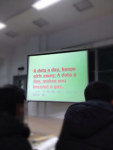

姚辉乾

22分钟前 来自网页532
11分钟前 来自网页
23分钟前 来自网页748
12分钟前 来自网页
21分钟前 来自网页824
18分钟前 来自网页978
21分钟前 来自网页1637
21分钟前 来自网页1509
昨天 23:34 来自网页1
13分钟前 来自网页
昨天 23:35 来自网页1
14分钟前 来自网页
今天 15:54 来自网页1
昨天 20:45 来自网页1
15分钟前 来自网页
12月17日 15:31 来自网页223899
16分钟前 来自网页
昨天 14:13 来自网页480385
46分钟前 来自网页
今天 16:21 来自网页
昨天 08:19 来自网页61
昨天 09:02 来自网页
12月18日 02:53 来自网页1753
12月18日 04:08 来自网页
12月18日 03:16 来自网页1021
12月18日 04:07 来自网页
12月18日 03:46 来自网页622
12月16日 12:13 来自网页1
12月18日 04:04 来自网页
12月17日 21:03 来自网页5
12月18日 04:03 来自网页(1)
12月17日 23:37 来自网页1
12月18日 04:03 来自网页
赵玉磊
盘子
王潇雪
教育正能量
冬子
莫灬筱灬颜
浮夸___
逍遥
ZHANG
张明威
虫子
真心爱你
星光闪烁
____苍凉-丫头
欧阳内涵
海翔
陈毫
我的心在飞翔
潮流前线
爱自己爱恬淡
善意的谎言
倾城绝恋丿小羊
小白白
装逼只是瞬间不要脸是永恒
未满十八周岁禁止关注收听
薛孟飞
熊春阳
微风
呼俊斌
残留的回忆